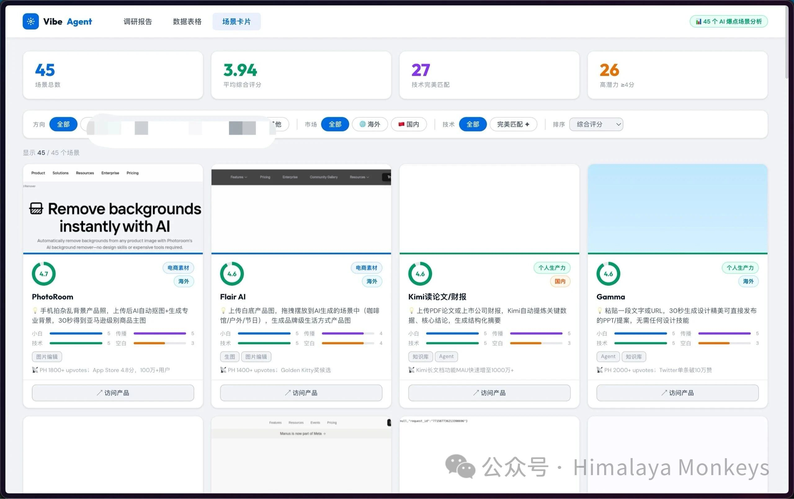

项目一 · Research
AI 市场机会调研平台
45 个 AI 产品病毒场景的调研、评分与协作分析——
从一个问题出发，用 Agent 扫市场、搭工具、让团队共同分析。
Python
Flask
Playwright
pandas
openpyxl
GitHub Pages
界面截图

场景卡片视图 · 45 个 AI 爆点场景分析 · 支持按方向、市场、技术匹配度筛选排序
项目起点
从一个问题开始
这个项目的起点是一个很具体的问题：哪些 AI 使用场景能让小白用户一句话完成生产级输出，并且愿意自发分享？
我们不是先写调研报告，而是直接让 Agent 去扫——Product Hunt、小红书、抖音，
把近期在爆的 AI 产品案例抓下来，然后结构化评分，再搭一个平台让团队一起分析。
核心发现：用 Agent 做调研的效率是传统方式的 5 倍以上。
不是因为 AI 比人聪明，而是它可以同时处理数十个方向，把「扫描」这件事做到极致。
人的精力只需要放在「判断」上。
核心功能
一个平台，两种协作方式
多人实时协作
Flask 本地服务，局域网内所有人都能在浏览器里编辑评分，
乐观锁检测冲突，不会互相覆盖。
GitHub Pages 只读版
无需安装任何环境，把静态版发给不懂开发的同事，
他们也能查看全部场景和分析结论。
五维度评分体系
每个场景按「小白友好度 / 病毒传播力 / 技术匹配度 /
市场空白 / 变现潜力」五个维度打分。
灵活筛选 + 导出
按方向、市场（海内外）、技术完美匹配度实时筛选，
一键导出 Excel 供进一步分析。
技术架构
数据流从采集到呈现
数据采集 Playwright 爬虫 → Product Hunt / 小红书 / 抖音
Agent 扫描 → 结构化 JSON → Excel 存储
后端服务 Flask + pandas → REST API
乐观锁 → ETag 冲突检测
前端展示 场景卡片 / 数据表格 / 调研报告 三视图
实时筛选 → 综合评分排序 → Excel 导出
静态版 GitHub Pages → 零环境依赖只读访问
完整过程
一步步是怎么做的
- 先定问题：用一句话写清楚调研目标，让 Agent 帮我们分解成可执行的搜索策略。
- 信号扫描：让 Agent 搜 Product Hunt、小红书、抖音等平台的热门 AI 产品，抓取近期在爆的案例。
- 结构化评分：把每个场景按五个维度打分，存入 Excel，形成可操作的数据集。
- 搭可视化平台：用 Flask 起一个本地服务，让团队成员都能在浏览器里看到场景卡片、编辑评分，不需要碰代码。
- 多人协作上线：同时支持本地局域网实时协作 + GitHub Pages 静态版，保证每个人都能参与，无论有没有开发环境。
调研不是先想清楚再做——
而是先跑起来，让数据告诉你答案在哪里。
返回首页